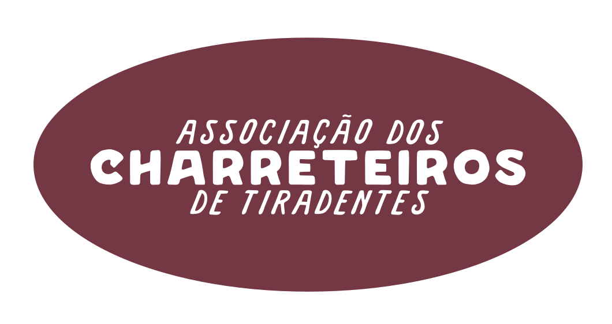
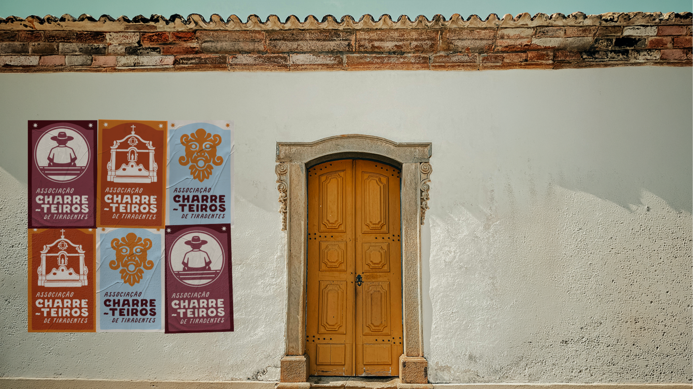
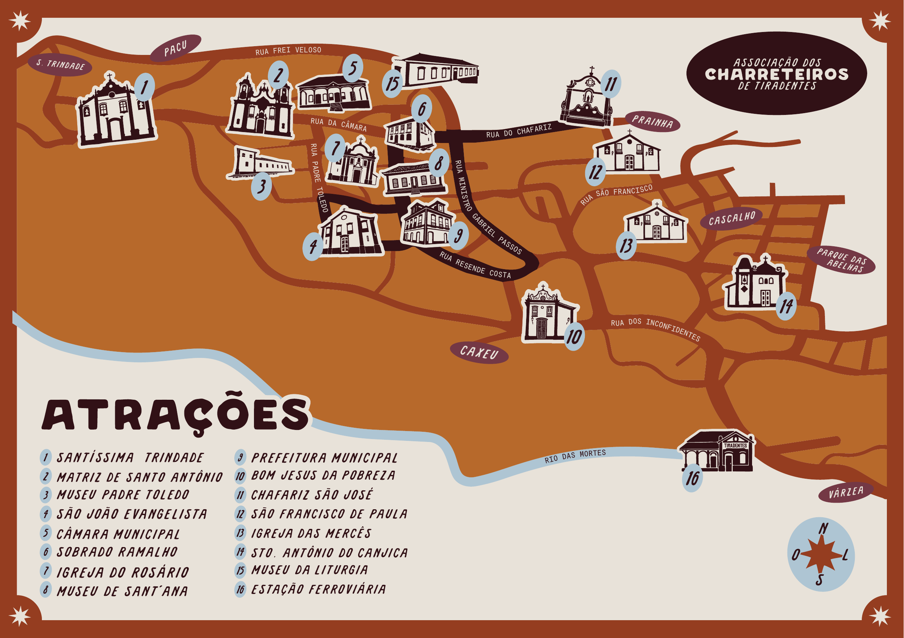

Passeio curto
Conheça pontos históricos da cidade em um trajeto curto e encantador.
Tiradentes, Minas Gerais
Um passeio pela história de Tiradentes, conduzido por quem conhece as ruas, as memórias e os encantos da cidade.


Quem somos
A Associação dos Charreteiros de Tiradentes faz parte da cidade há gerações. A charrete é como um patrimônio cultural que atravessa o tempo e acolhe turistas do mundo todo.
A origem desse trabalho vem dos tropeiros na Serra de São José, de onde surge a memória do pioneiro Dinho de Matos e seu cavalo Criolo. O legado segue preservado com orgulho e respeito, por quem conhece as ruas e histórias tiradentinas como ninguém.
A Associação vive um novo capítulo, com a transição gradual da tração animal para as charretes elétricas. Essa mudança representa um compromisso com o bem-estar animal, a sustentabilidade e a valorização do trabalho dos profissionais.

A experiência
Conhecer Tiradentes de charrete é descobrir ruas e paisagens de um dos destinos mais charmosos de Minas. Cada charreteiro compartilha histórias, curiosidades e memórias que tornam a experiência acolhedora, segura e inesquecível.
Roteiros
Cada visitante tem seu ritmo. Por isso, oferecemos diferentes trajetos para que você descubra Tiradentes da maneira que preferir.

Conheça pontos históricos da cidade em um trajeto curto e encantador.
Novos cenários, histórias e uma imersão maior na cultura local.
A experiência plena para quem deseja viver o encanto de Tiradentes.
Reservas
Fale com a Associação para consultar horários, disponibilidade e o melhor roteiro para o seu momento em Tiradentes.
Reservar pelo WhatsAppPonto principal de saída. Estação Ferroviária mediante disponibilidade.
Horário a confirmar com a Associação.
Capacidade por charrete.
Valor por trajeto. Consulte o roteiro desejado.